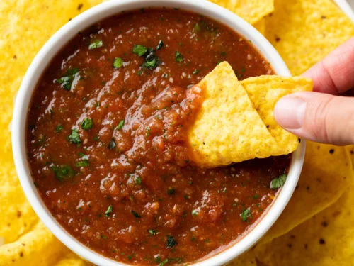

Salsa

Description
This is a recipe for salsa based on a number of different attempts that
I finally landed on and was satisfied with. Everything should be available in
your local grocery store and should be reasonably cheap, certainly more so
than jarred salsa of the same caliber!
Ingredients
- Tomatoes - 1lb
- Assorted Peppers - Personal preference for spice levels - 2lb
- Canned Chipotle peppers in adobo sauce - 1 Can
- Limes - 3
- Various Spices - (Cumin, Chili Powder, and Salt) 1 tbsp
Steps
- Juice and Zest limes into a blender
- Add everything else to blender and blend on high until desired consistency
- Enjoy!